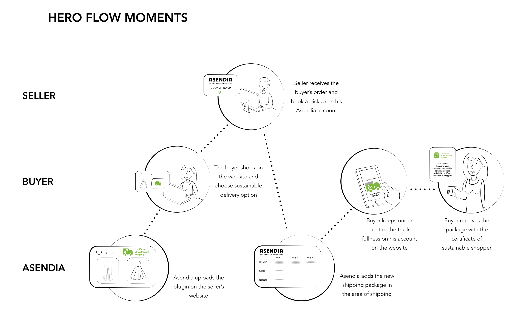
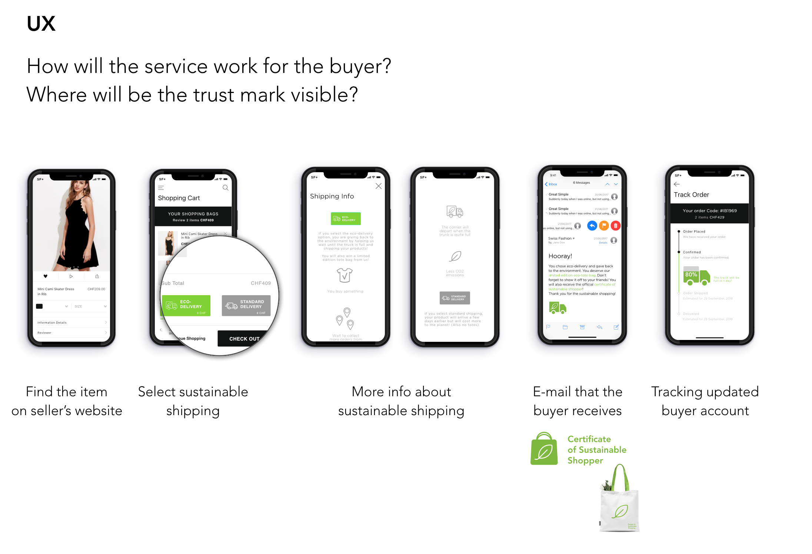

This collaborative project was developed as a result of an investigation about the 21st Century Skills (skills kids today will need to have in order to accomplish the profile for a job in a few years). Concluding this research, we realize the importance of the teamwork (coordinating with others), creativity, judgment and decision making/critical thinking. And as a solution RABBIT was created, a children Interactive game that can help kids from 5 to 10 years old develop new abilities using diverse methods, as try and error, analyse, focus, quick reaction, understanding the problem, brain workout.
It is a two players game, that consist on a robot – rabbit and 10 cards that change its behaviour (5 obstacles and 5 directional cards). Depending on the way of playing, different abilities are learn.
In a collaborative and discovery game users need to explore their environment, and discover the movements that each card will produce.
In a competitive game, one player has the objective to arrive to a goal, and the other player has to place obstacles in order to distract the rabbit from this goal.
During the open game, players can improvise, develop objectives and make their own decisions in order to accomplish different goals.
It has some advantages from the other games, as the ones that have the outside games, first the activation of the body, the enhance of the imagination, the activation that produce being outside to the brain so it works and learn in different levels, and the benefits of the tangible games, where the senses are activated and the learning stays for longer. As an extra benefit, it gives some social skills as teamwork, competition and collaboration.